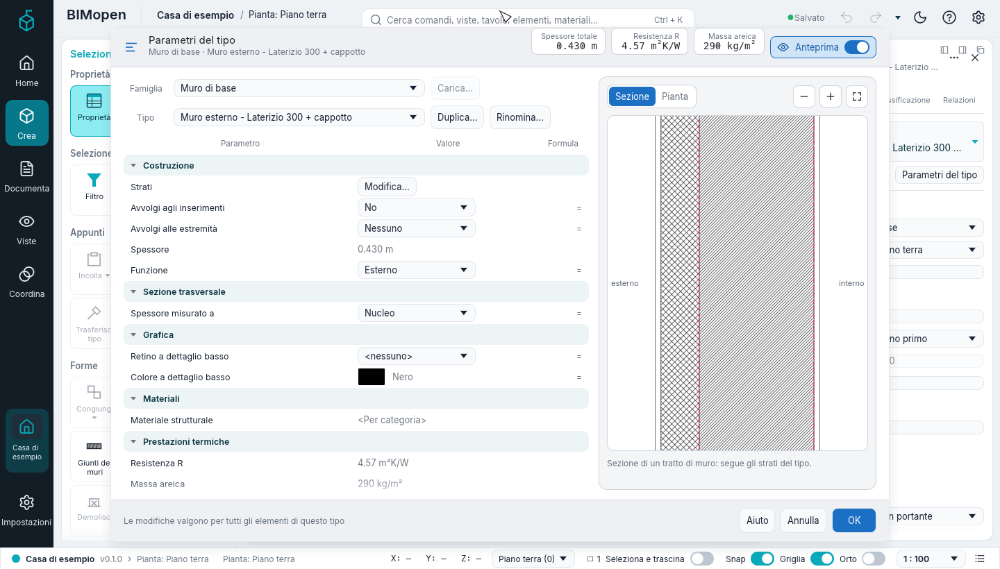
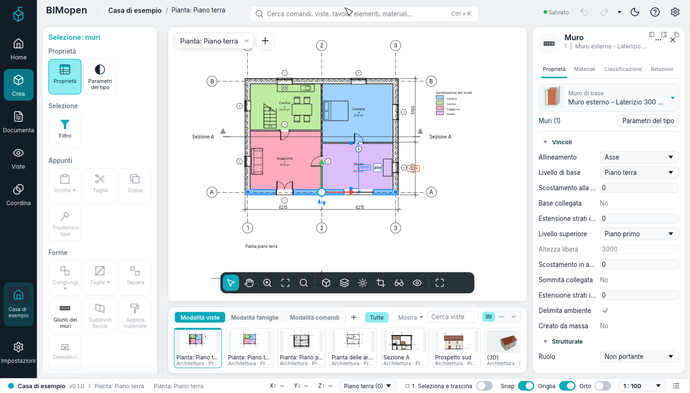
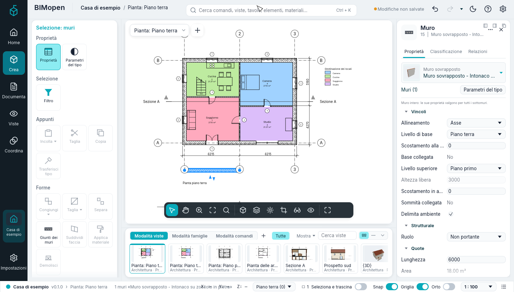
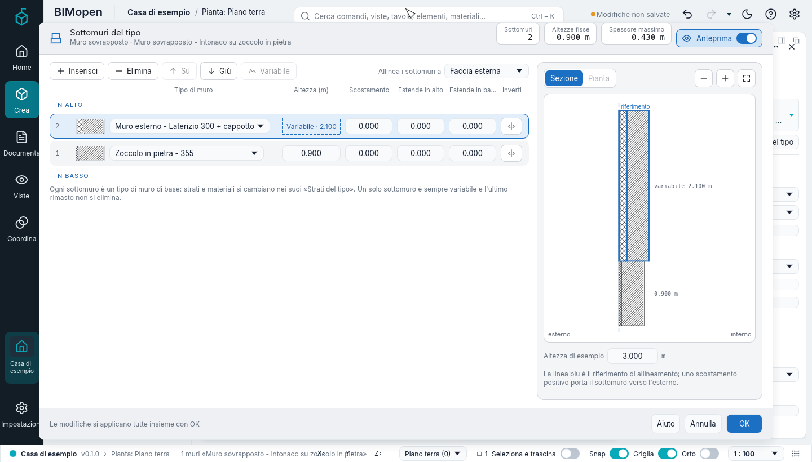

Muri, porte e finestre
Questo capitolo descrive come si disegnano i muri, come si uniscono e si collegano a tetti e pavimenti, come si impostano i loro tipi e strati, e come vi si inseriscono porte e finestre, come si ribaltano, si spostano e come sono disegnate con ogni impostazione di Dettaglio.
Disegnare i muri
Crea ▸ Costruisci ▸ Muro (o WA) avvia lo strumento muro, in una pianta, una sezione, un prospetto o nella vista 3D.
Scegli il tipo di muro nel selettore dei tipi in cima al pannello dell'elemento; Parametri del tipo modifica il tipo, e con esso ogni muro di quel tipo. La scheda contestuale Disegna
muro mostra il gruppo Disegna, e la striscia delle opzioni mostra:
| Opzione | Che cosa fa |
|---|---|
| Altezza o Profondità | Il muro sale dal livello (Altezza) o scende da esso (Profondità) |
| Un livello, o Non collegata con un valore | Il muro arriva a quel livello, o è alto (o profondo) quanto il valore |
| Livello | Solo in una vista 3D: il livello su cui poggiano i muri; |
| Allineamento | Il piano del muro che corre lungo i clic: Asse (predefinito), la linea d'asse del nucleo, o una delle superfici di finitura e del nucleo, esterna o interna |
| Continua | Attivo, ogni clic termina un muro e inizia il successivo; spento, ogni due clic fanno un muro a sé |
| Scostamento | La linea di allineamento corre a questa distanza dai clic, verso l'esterno |
| Raggio | Non disponibile: richiede i muri curvi, ed è mostrato disattivato |
| Giunto alle estremità | Non ancora disponibile, mostrato in grigio: i muri disegnati si uniscono sempre; il giunto di un'estremità si impedisce poi dal suo controllo |
| Giunzione automatica | Non ancora disponibile, mostrata in grigio e spuntata: i muri si uniscono a quelli che incontrano |
Nella vista 3D il muro che stai disegnando segue il cursore come un solido, con il suo spessore e la sua altezza fino al livello superiore (o all'altezza digitata), sul piano del livello, con lunghezza e angolo come quota temporanea; Maiusc lo tiene ortogonale ed Esc lo toglie. Anche Rettangolo, i poligoni e Seleziona linee funzionano lì: i muri di tutta la forma seguono il cursore, e la linea del livello sotto il cursore si seleziona come in pianta.
Durante il disegno:
- l'esterno del muro è a sinistra della direzione di disegno: disegnato da sinistra a destra, la superficie esterna è in alto. L'anteprima mostra la superficie esterna più spessa;
- la barra spaziatrice porta l'esterno del muro successivo dall'altra parte;
- dopo il primo punto, digita una lunghezza e premi Invio: il valore compare in un riquadro accanto al cursore e il muro termina a quella distanza, nella direzione del cursore (griglie, separatori ambienti, contorni superficie, sezioni e prospetti accettano allo stesso modo una lunghezza digitata);
- Esc termina la catena; ancora Esc, o Modifica, chiude lo strumento.
Il gruppo Disegna sceglie la forma:
| Forma | Come |
|---|---|
| Linea | Clicca l'inizio e la fine di ogni muro |
| Rettangolo | Clicca due angoli opposti: quattro muri uniti, con l'esterno all'esterno |
| Poligono inscritto | Imposta Lati nella striscia delle opzioni, clicca il centro e un vertice: i vertici stanno sul cerchio |
| Poligono circoscritto | Lo stesso, ma i lati toccano il cerchio |
| Seleziona linee | Clicca una linea della pianta (una linea o un bordo di un elemento): un muro lungo di essa. Premi TAB su una linea per prendere tutta la catena di linee unite a essa, poi clicca |
L'allineamento e il ribaltamento
Seleziona un muro: punti blu segnano le estremità della sua linea di allineamento, e due frecce stanno sul suo lato esterno. Un clic sulle frecce ribalta il muro attorno alla linea di allineamento: il primo e l'ultimo strato si scambiano, e porte e finestre mantengono il loro orientamento. Cambiare l'Allineamento di un muro già posizionato non lo sposta; il ribaltamento successivo lo gira attorno al nuovo piano. Cambiare il tipo di un muro, o i suoi strati, lascia la linea di allineamento dov'era.
Collegare i muri a tetti e pavimenti
Un muro può seguire un tetto o un pavimento invece di un'altezza fissa.
- Seleziona i muri.
- Selezione: muri ▸ Modifica muro ▸ Collega sopra/sotto.
- Nella striscia delle opzioni, Associa muro: Parte superiore o Base.
- Clicca il tetto o il pavimento, in una pianta, in una sezione o nella vista 3D.
Con Parte superiore i muri salgono o scendono fino all'intradosso del tetto (seguendone le falde: i muri di timpano arrivano al colmo) o del pavimento sopra di loro. Con Base poggiano sulla faccia superiore del pavimento sotto di loro. Da quel momento lo seguono: un tetto più inclinato, un tetto alzato con il suo offset di base, un pavimento spostato portano con sé i muri.
Per scollegarli: seleziona i muri, Selezione: muri ▸ Modifica muro ▸ Scollega sopra/sotto, poi clicca l'elemento da cui staccarli, oppure premi Dissocia tutti nella striscia delle opzioni. I muri mantengono l'altezza che hanno in quel momento, e possono essere collegati di nuovo quando vuoi. Se si elimina un tetto o un pavimento a cui sono collegati dei muri, anche questi mantengono la loro altezza.
Le proprietà L'altezza è associata e La base è associata mostrano lo stato (sola lettura); finché la parte superiore è associata, Altezza libera è di sola lettura.
Modificare il contorno di un muro
Un muro non deve essere per forza un rettangolo: il suo contorno si disegna in un prospetto o in una sezione paralleli, con i fori, come per un timpano o un muro a gradoni.
- Seleziona il muro e fai clic su Modalità ▸ Modifica contorno nella sua scheda contestuale. Da una pianta o da una vista non parallela al muro, Vai a vista elenca le sezioni e i prospetti paralleli: scegline uno e fai clic su Apri vista.
- La modalità di disegno si apre con il contorno del muro in magenta. Cambialo con Linea e Rettangolo (vedi la modalità di disegno): seleziona una linea e premi Del, disegnane di nuove, o un Cerchio. Ogni perimetro chiuso dentro il contorno è un foro attraverso tutti gli strati; un perimetro dentro un foro è di nuovo pieno.
- Fai clic su Termina modalità di modifica (o Annulla modalità di modifica per lasciare il muro com'era).
Il muro prende quel contorno in 3D, nelle sezioni e in pianta, dove è tagliato solo dove il contorno raggiunge il piano di taglio; porte e finestre lo tagliano ancora, anche sopra un foro, che resta un foro. Una parte superiore collegata a un tetto o a un pavimento lo limita ancora. Pianta, sezioni, prospetti e vista 3D mostrano un solo solido, ricavato dallo stesso contorno e dagli stessi fori. Gli strati che si ripiegano rivestono i fori come rivestono porte e finestre (vedi Tipi di muro e strati). Una facciata continua tiene i pannelli e i montanti dentro il nuovo contorno. Modalità ▸ Reimposta contorno lo rende di nuovo rettangolare; Ctrl+Z annulla l'una e l'altra cosa.
Il contorno si modifica anche nella vista 3D: il disegno si trova sul piano del muro e la vista resta 3D. Solo da una pianta compare Vai a vista, e non cambia nulla finché una vista non si apre con Apri vista. Durante il disegno il contorno originale del muro è tracciato con linee di riferimento tratteggiate; il disegno si aggancia ai loro estremi e su di esse.
Giunti dei muri
I muri le cui estremità si incontrano si uniscono da soli, e così un muro che termina sul fianco di un altro e due muri che si incrociano. Con il dettaglio Medio e Alto ogni strato è risolto rispetto agli strati dell'altro muro:
- in un angolo (a L), ogni strato incontra lo stesso strato dell'altro muro: le finiture girano l'angolo e i nuclei si incontrano;
- in un giunto a T, il nucleo del muro che termina attraversa le finiture dell'altro muro fino al suo nucleo; le sue finiture si fermano alla superficie, che lì resta aperta;
- dove due muri si incrociano (a X), un nucleo attraversa le finiture dell'altro muro;
- i pezzi dello stesso materiale si fondono senza linee tra loro; una linea sottile separa due materiali diversi; il contorno libero è disegnato spesso.
Con il dettaglio Basso i muri uniti sono un solo riempimento, senza linee tra loro. Le sezioni e la vista 3D usano gli stessi pezzi, quindi nulla si sovrappone.
Lo strumento Giunti dei muri
Forme ▸ Giunti dei muri nella scheda contestuale, poi clicca il quadrato grigio che compare su un angolo. La striscia delle opzioni propone:
- Configurazione: Testa (un muro prosegue, l'altro si ferma contro di esso), Giunto d'angolo (entrambi terminano sulla bisettrice) o Squadra (il muro che si ferma termina a squadra); Precedente e Successivo cambiano quale muro prosegue;
- Visualizza: Calcola unioni, Non calcolare unioni (i muri si accostano, con una linea spessa tra loro) o Utilizza le impostazioni della vista.
Ogni modifica si può annullare. Esc chiude lo strumento.
La proprietà della pianta Visualizzazione giunti dei muri (in Grafica) è l'impostazione della vista: Pulisci tutti i giunti muri, oppure Pulisci giunti muri dello stesso tipo per lasciare una linea spessa dove si incontrano muri di due tipi, a meno che il loro angolo sia impostato su Calcola unioni.
Impedire un giunto
Per evitare che un'estremità di un muro si unisca (un giunto di dilatazione, per esempio), seleziona il muro, fai clic destro sul punto blu di quell'estremità e scegli Impedisci giunto: entrambi i muri terminano allora a squadra, distanti. Un piccolo segno accanto all'estremità lo indica; cliccalo, oppure fai clic destro sul punto e scegli Consenti giunto, per unirla di nuovo.
Tipi di muro e strati
Parametri del tipo (il riquadro del pannello degli strumenti con un muro selezionato, il pulsante sotto il selettore del tipo di Proprietà, o il menu di un tipo nel Browser di progetto) mostra i parametri di un tipo di muro; una modifica vale per tutti i muri di quel tipo.
Parametri del tipo

In alto ci sono la famiglia e il tipo e, per un tipo con strati, le tre cifre di Strati del tipo: Spessore totale, Resistenza R e Massa areica. Sotto, Famiglia con Carica… (una famiglia dalla libreria; grigio per i muri e le altre famiglie di sistema, che si duplicano anziché caricarsi) e Tipo con gli altri tipi della famiglia, Duplica… (una copia, che diventa il tipo dei muri selezionati; il suo nome non segue gli strati) e Rinomina…. Seguono i parametri in una tabella Parametro · Valore · Formula, in gruppi che si aprono e si chiudono con un clic sul titolo:
- Costruzione: Strati con Modifica…, che apre Strati del tipo; Avvolgi agli inserimenti (No, Esterno, Interno, Entrambi); Avvolgi alle estremità (Nessuno, Esterno, Interno); Spessore (la somma degli strati in metri, sola lettura); Funzione (Esterno, Interno, Fondazione, Contenimento, Intercapedine, Nucleo).
- Sezione trasversale: Spessore misurato a (Nucleo, Faccia esterna, Faccia interna).
- Grafica: Retino a dettaglio basso e Colore a dettaglio basso (un campione che apre la scelta del colore), cioè come si riempiono i muri tagliati del tipo con il dettaglio Basso.
- Materiali: Materiale strutturale, di sola lettura: il materiale dello strato segnato come strutturale in Strati del tipo, «
» se non ce n'è. - Prestazioni termiche: Resistenza R e Massa areica, di sola lettura e calcolate dagli strati (mostrano «—» finché a un materiale mancano i valori termici); Assorbimento solare (da 0 a 1, all'inizio 0,7) e Ruvidità (da 1 · Molto liscio a 5 · Molto ruvido).
- Identificazione: Nota chiave (si scrive, oppure … apre le Note chiave del progetto: codici e descrizioni da aggiungere, cambiare o eliminare; una riga scelta e OK ne danno il codice al tipo), Codice assieme, Descrizione assieme (sola lettura), Modello, Produttore, Commenti sul tipo, Collegamento web, Descrizione, Contrassegno del tipo (ciò che mostra un'etichetta di muro), Resistenza al fuoco e Costo.
La colonna Formula segna con «=» i valori che si possono cambiare. Ogni modifica si applica subito e Ctrl+Z la annulla, un passo ciascuna; Annulla annulla tutte le modifiche fatte da quando la finestra si è aperta, OK le tiene, Aiuto apre questa pagina.
A destra l'anteprima disegna il tipo come Strati del tipo: Sezione (il muro tagliato, gli strati affiancati) o Pianta (l'estremità del muro), con i pulsanti per ridurre, ingrandire e adattare; pavimenti e tetti mostrano gli strati sovrapposti; porte, finestre, componenti e facciate continue un'immagine di un loro elemento. L'interruttore Anteprima nell'intestazione, accanto alle cifre (un occhio e un interruttore acceso/spento), la nasconde e la tabella si allarga nello spazio liberato, mentre la finestra mantiene dimensione e posizione; riacceso la mostra di nuovo, e la scelta resta. Pavimenti, tetti e le altre famiglie usano la stessa finestra, con i loro parametri.
Strati del tipo
Strati ▸ Modifica… apre Strati del tipo, la stessa finestra per muri, pavimenti, tetti e controsoffitti. In alto ci sono la famiglia e il tipo, e tre valori aggiornati a ogni modifica: Spessore totale (in metri), Resistenza R (m²K/W: la somma di spessore / conducibilità termica degli strati, più 0,17 per le due superfici) e Massa areica (kg/m²: la somma di spessore × densità). R e massa compaiono quando ogni materiale ha la sua Conducibilità termica e la sua Densità (i materiali del modello di progetto le hanno, gli altri si completano in Materiali); altrimenti mostrano «—».
A sinistra c'è l'elenco degli strati, dal LATO ESTERNO in alto al LATO INTERNO in basso. Ogni strato è una scheda con il numero, un campione del materiale (colore e retino di sezione), la Funzione (Struttura, Supporto, Isolante termico, Strato d'aria, Finitura 1, Finitura 2, Membrana), il Materiale (un clic apre Materiali per sceglierlo), lo Spessore in millimetri e tre interruttori:
- Avvolgimento: lo strato può avvolgersi alle aperture e alle estremità (mai uno strato del nucleo di un muro);
- Materiale strutturale: il materiale dello strato è quello strutturale del tipo (uno solo, nel nucleo);
- Variabile: lo spessore dello strato può variare (uno solo, nei pavimenti e nei tetti).
Due linee tratteggiate, Contorno del nucleo · sopra e Contorno del nucleo · sotto, delimitano il nucleo. Un clic su una scheda la seleziona; Inserisci aggiunge uno strato sotto quello selezionato; Elimina, Su e Giù agiscono sullo strato selezionato e sono grigi senza selezione. In un muro anche un contorno del nucleo si seleziona con un clic e si sposta con Su e Giù. Uno strato membrana non ha spessore, e ogni altro strato è spesso almeno 4 mm: altri valori sono rifiutati, la finestra resta aperta e la riga di stato in basso dice perché.
Per i muri, nella riga dei pulsanti:
- Avvolgi agli inserimenti (No, Esterno, Interno, Entrambi): gli strati con l'avvolgimento fuori dal nucleo su quel lato girano dentro gli stipiti di porte e finestre; gli strati dietro di loro arretrano;
- alle estremità (Nessuno, Esterno, Interno): lo stesso alle estremità libere dei muri.
A destra l'anteprima segue ogni modifica. Sezione mostra il muro tagliato, con gli strati affiancati e alti quanto Altezza di esempio (6000 mm all'inizio), oppure il pavimento, il tetto o il controsoffitto con gli strati sovrapposti; Pianta (solo muri) mostra l'estremità del muro con gli strati che vi si avvolgono. Lo strato selezionato è contornato e il nucleo sta tra due linee tratteggiate. I pulsanti sopra il disegno lo rimpiccioliscono, lo ingrandiscono e lo adattano; anche la rotellina, il pizzico e il trascinamento lo ingrandiscono e lo spostano, e un clic su uno strato lo seleziona nell'elenco. Sotto, per i muri, Struttura verticale (in sezione) raccoglie Modifica, Unisci regioni, Profili, Assegna strati, Dividi regione e Rivelazioni, non ancora disponibili (grigi).
L'anteprima disegna ogni strato esattamente come le piante e le sezioni al dettaglio Medio: il motivo di sezione del materiale nel suo colore, sullo sfondo della vista in Linee o sul colore di ombreggiatura del materiale negli stili ombreggiati, secondo lo stile grafico della vista attiva e il tema. Un materiale cambiato in Materiali cambia allo stesso modo l'anteprima, le piante, le sezioni e la vista 3D; le sostituzioni di una vista (Visibilità/Grafica, filtri, sostituzioni di un elemento) cambiano solo quella vista, mai l'anteprima.
L'interruttore Anteprima nell'intestazione, accanto alle cifre, nasconde l'anteprima e l'elenco prende tutta la larghezza, mentre la finestra mantiene dimensione e posizione; riacceso la mostra di nuovo, e la scelta resta. In basso, OK applica tutte le modifiche in un solo passo, che Ctrl+Z annulla; Annulla chiude senza cambiare nulla; Aiuto apre questa pagina. In una finestra stretta l'anteprima sta sopra l'elenco.
Il risvolto si vede in ogni vista: in pianta, nella vista 3D, nelle sezioni e nei prospetti gli strati spuntati rivestono gli stipiti, l'architrave e il davanzale di porte e finestre, i lati dei fori di un contorno modificato (vedi Modificare il contorno di un muro) e le estremità libere. Un tipo di porta o di finestra sostituisce il risvolto del muro con la sua Chiusura muro.
Proprietà dei muri

Con un muro selezionato, Proprietà mostra in alto il selettore del tipo: l'immagine del tipo, la sua famiglia e il suo nome. Un clic apre l'elenco dei tipi raggruppati per famiglia (Muro di base, Facciata continua), ciascuno con una piccola immagine — gli strati di un muro affiancati nei colori dei materiali, la griglia di una facciata continua — e il tipo corrente evidenziato; scrivendo in Cerca un tipo… restano i tipi il cui nome contiene il testo, le frecce e Invio ne scelgono uno. Sotto, Muri (1) dice cosa si sta vedendo e Parametri del tipo apre la finestra descritta sopra.
I parametri sono in gruppi che si aprono e si chiudono con un clic sul titolo:
- Vincoli: Allineamento (Asse, Asse del nucleo, Faccia esterna, Faccia interna, Faccia esterna del nucleo, Faccia interna del nucleo), Livello di base, Scostamento alla base, Base collegata (sola lettura), Estensione strati in basso, Livello superiore (un livello, o Non collegata), Altezza libera (si scrive solo con Non collegata, altrimenti è grigia; alla riga di comando viene rifiutata, dicendo perché, finché il muro ha un livello superiore), Scostamento in alto (solo con un livello, altrimenti grigio), Sommità collegata (sola lettura), Estensione strati in alto, Delimita ambiente (se la togli, i locali attorno al muro lo ignorano) e Creato da massa (sola lettura).
- Strutturale: Ruolo (Non portante, Portante, Controvento, Combinato). Un muro diverso da Non portante è strutturale, e se ne scelgono Copriferro in testa, Copriferro lato interno e Copriferro lato esterno (25, 35 o 40 mm); altrimenti sono grigi. Volume armature è di sola lettura.
- Quote: Lunghezza, Spessore, Area, Volume e gli estremi della linea del muro.
- Identificazione: Commenti, Contrassegno e Classifica come (Muro esterno, Muro interno, Tramezzo, Muro di fondazione; finché non se ne sceglie uno, secondo la funzione del tipo).
- Fasi: Fase di creazione (Stato di fatto, Nuova costruzione) e Fase di demolizione (Nessuna, Stato di fatto, Nuova costruzione). Restano con il muro; le viste non disegnano ancora le fasi.
Estensione strati in basso e in alto portano gli strati esterni al nucleo sotto la base e sopra la sommità di quella distanza (una negativa li accorcia), nella vista 3D, nelle sezioni e nei prospetti; il nucleo resta tra la base e la sommità. In alto si estendono dove la sommità è piana, non dove il muro è associato a un tetto o a un piano inclinato.
Con più muri selezionati il filtro dice Muri (n), il selettore del tipo mostra il loro tipo (o «‹valori diversi›») e ogni riga mostra il valore comune ai muri, o «‹valori diversi›» dove differiscono; una modifica va a tutti in un solo passo. Aiuto sulle proprietà in basso apre questa pagina; Applica conferma il valore che si sta scrivendo. Ogni modifica è un passo che Ctrl+Z annulla.
Inserire porte e finestre
Crea ▸ Costruisci ▸ Porta (DR) o Finestra (WN), in una pianta o nella vista 3D.
Scegli il tipo, poi passa su un muro: l'apertura segue il cursore lungo di esso, e le quote
temporanee misurano dalla sua linea d'asse alle linee d'asse dei muri più vicini che attraversano
il muro ospite, da ciascun lato. Una porta si apre verso il lato del muro su cui sta il cursore; la
barra spaziatrice porta la sua cerniera sull'altro stipite. Clicca per inserirla: il muro è
tagliato in ogni vista. Una finestra prende l'Altezza di default della soglia del suo tipo.
Porte e finestre ricevono un Contrassegno che conta per categoria (1, 2, 3…), a partire dal più alto.
Etichette
Etichetta al posizionamento, nella striscia delle opzioni degli strumenti porta e finestra, etichetta ogni apertura man mano che viene inserita. La striscia delle opzioni propone allora Orizzontale o Verticale, e Direttrice con la sua lunghezza. L'etichetta di una porta mostra il suo Contrassegno; quella di una finestra il Contrassegno tipo del suo tipo. Documenta ▸ Assegna etichette a tutti etichetta le aperture ancora senza etichetta.
Ribaltare una porta o una finestra
Seleziona una porta o una finestra in pianta: le frecce attraverso il muro, sul lato verso cui si apre, ne ribaltano il verso di apertura; le frecce accanto, lungo il muro, portano la cerniera sull'altro stipite. Il menu contestuale fa lo stesso: Inverti in senso orizzontale (la cerniera) e Inverti in senso verticale (il verso).
Spostare una porta o una finestra in un altro muro
Selezionala, Selezione: porte ▸ Host ▸ Seleziona nuovo host (o Selezione: finestre), poi clicca un altro muro: l'apertura si sposta lì, dove hai cliccato, con il suo tipo e la sua soglia. Resta selezionata.
Trascinando una porta o una finestra resta in un muro: il puntatore viene proiettato sulla linea di allineamento del muro, così l'apertura scorre lungo il muro, tra le sue estremità, con le quote temporanee verso i muri più vicini, in pianta, in sezione, in prospetto o nella vista 3D; lì un clic sul vetro di una finestra seleziona la finestra, non ciò che si vede attraverso. Rilasciata sopra un altro muro, passa a quel muro; rilasciata nel vuoto, resta nell'ultimo punto valido del suo. I tasti freccia la spostano lungo il muro allo stesso modo.
Proprietà di porte e finestre
Istanza: Livello, Altezza della soglia, Larghezza e Altezza (del tipo), Altezza estremità, Commenti, Contrassegno. Cambiare Altezza della soglia o Altezza estremità sposta l'apertura in alto o in basso; le sue dimensioni restano.
Tipo: Chiusura muro (Per tipo di host, o un risvolto proprio), Funzione (Interno o Esterno), Materiale porta (Materiale vetro per le finestre) e Materiale telaio, Larghezza infisso, Spessore (dell'anta di una porta, o la profondità del telaio di una finestra), Altezza di default della soglia e Rientro finestra (finestre: quanto il telaio sta dentro rispetto alla superficie esterna), Proiezione esterna infisso e Proiezione interna infisso (porte), Ante e Contrassegno tipo. Una porta non può diventare una finestra cambiando tipo.
Come sono disegnati muri, porte e finestre
Il Dettaglio della pianta decide:
| Basso | Medio | Alto | |
|---|---|---|---|
| Muri | Un riempimento (o il retino a dettaglio basso del tipo), muri uniti fusi | Ogni strato con il motivo di sezione del suo materiale | Come Medio |
| Finestre | Il telaio come un solo contorno, il vetro lungo di esso, il muro sotto visto come linee | Il telaio tagliato a ogni stipite e al montante di una finestra a due ante, al suo rientro; una linea di vetro; il davanzale esterno e la soglia interna | Come Medio, con vetro doppio |
| Porte | L'anta come linea e il suo arco di apertura | Il telaio a ogni stipite, l'anta con il suo spessore, l'arco di apertura | Come Medio, con le mostre sporgenti dalle superfici |
In ogni caso gli strati terminano agli stipiti dell'apertura, chiusi dalla linea di taglio, oppure vi si ripiegano come chiedono i tipi. Nelle sezioni e in 3D porte e finestre mostrano telaio, ante, vetro e davanzali, nei materiali del tipo.
Facciate continue
Una facciata continua è un muro di un tipo di facciata continua, disegnato con lo strumento Muro: scegli Facciata continua (un solo pannello di vetro lungo quanto il muro), Vetrata esterna (linee di griglia dal tipo) o Facciata negozio (linee di griglia e montanti) nel selettore dei tipi, poi disegna come per ogni muro, in pianta o in 3D, con Continua e le forme di Disegna. Un muro di base diventa facciata continua scegliendo un tipo di facciata continua nel selettore dei tipi; le porte e le finestre che ospita vengono eliminate, perché una facciata continua non le ospita, e un messaggio lo dice (annullare le riporta).
In pianta ogni pannello di vetro è disegnato con il suo spessore e i montanti sono tagliati. Un tipo con Incorpora automaticamente spuntato (la Facciata negozio) disegnato lungo un muro vi taglia il suo vano, in pianta, nelle sezioni, in 3D e in IFC. Il muro resta uno solo: ai lati e sopra il vano prosegue con i suoi strati, la sua area netta non conta il vano, e spostando o ridimensionando la facciata il vano la segue.
- Layout verticale e layout orizzontale del tipo (Distanza fissa, Numero predefinito, Spaziatura massima) con la loro spaziatura, e Numero griglie verticali e Giustificazione verticale dell'istanza, dispongono da soli le linee di griglia.
- Crea ▸ Costruisci ▸ Griglia facciata continua: clicca vicino al bordo superiore o inferiore per una linea verticale, vicino a un lato per una orizzontale, in un prospetto, una sezione, una pianta o nella vista 3D (sulla faccia sotto il cursore); si aggancia al centro e ai terzi del pannello.
- Crea ▸ Costruisci ▸ Montante: Linea di griglia, Segmento di griglia o Tutte le linee di griglia, con il tipo di montante scelto nel selettore dei tipi; clicca la linea di griglia in un prospetto, in una sezione o nella vista 3D.
- Seleziona la facciata continua, poi Pannello nella sua scheda contestuale: scegli un tipo di pannello (una Porta di facciata continua, un pannello vetrato o pieno, o nessuno) e clicca il pannello da cambiare, in un prospetto, in una sezione o nella vista 3D.
Pannelli e montanti hanno i loro abachi, e l'esportazione IFC scrive la facciata continua con le sue lastre e i suoi elementi.
- Griglia facciata continua ▸ Posizionamento: Tutti i segmenti (tutta la linea), Un segmento (solo attraverso il pannello cliccato) o Tutti eccetto selezionati (clic per posizionare la linea, clic sui segmenti da escludere, poi clic fuori dalla linea).
- Con una facciata continua selezionata, Aggiungi/Rimuovi segmenti: un clic su un segmento di una linea di griglia lo toglie (i due pannelli ai lati diventano uno e il suo montante sparisce) o lo rimette. I pannelli restano rettangolari: un segmento che darebbe un pannello a L viene rifiutato.
- Con il cursore su una facciata continua, TAB evidenzia il pannello sotto il cursore; un clic seleziona solo quello. Il pannello dell'elemento ne mostra Larghezza e Altezza, e il selettore del tipo ne cambia il tipo.
Muri sovrapposti

Un muro sovrapposto è fatto di sottomuri uno sopra l'altro: per esempio un muro intonacato su uno zoccolo in pietra. Ogni sottomuro è un tipo di muro di base, con i suoi strati e materiali. Il modello ne ha uno, Muro sovrapposto - Intonaco su zoccolo in pietra (il muro esterno su uno zoccolo in pietra di 0,9 m): sceglilo nel selettore del tipo di Muro e disegnalo come ogni muro.
Il muro sovrapposto tiene la linea, i livelli e l'altezza; i suoi sottomuri li seguono. In pianta, in sezione, in prospetto e nella vista 3D ogni sottomuro è disegnato con gli strati del suo tipo, nei colori dei loro materiali. I sottomuri si uniscono ai muri che incontrano, ciascuno alla sua altezza: all'angolo tra due muri sovrapposti lo zoccolo incontra lo zoccolo e il muro sopra il muro sopra, un muro di base incontra a turno ogni sottomuro, e due pile di altezze o spessori diversi si incontrano su ogni altezza in comune; ogni strato si chiude attorno all'angolo, in pianta e in 3D. L'Abaco dei muri elenca i sottomuri, una riga ciascuno. Una porta o una finestra messa su un muro sovrapposto taglia ogni sottomuro che attraversa, con il davanzale misurato dalla base del muro sovrapposto.
Un clic seleziona il muro intero; Tab passa a ciascun sottomuro, dal basso in alto (la barra di stato dice «Tab · elemento successivo»). Le Proprietà del muro intero valgono per tutti i suoi sottomuri; il suo Allineamento è il piano su cui è disegnato, come per ogni muro: le facce della fascia occupata dai suoi sottomuri, o il nucleo del sottomuro variabile. Dando a un muro di base un tipo sovrapposto, o a un muro sovrapposto un tipo di base, il muro resta sul suo allineamento. Di un sottomuro si modificano solo Delimita ambiente e Ruolo: il resto viene dal muro sovrapposto e dal suo tipo, e il suo tipo si cambia nel tipo sovrapposto. Scomponi in muri singoli, nel menu contestuale e con il muro selezionato, fa di ogni sottomuro un muro di base indipendente dove si trova; non si ricompongono (Ctrl+Z annulla). Il contorno di un muro sovrapposto o di un sottomuro non si modifica ancora.
I sottomuri del tipo

I Parametri del tipo di un tipo di muro sovrapposto mostrano Sottomuri con Modifica…, che apre Sottomuri del tipo. In alto il tipo e tre cifre: quanti sottomuri, la somma delle altezze fisse e lo spessore massimo. La tabella elenca i sottomuri da IN ALTO a IN BASSO, numerati dal basso: Tipo di muro (un tipo di muro di base), Altezza in metri, Scostamento dalla linea di riferimento (positivo verso l'esterno), Estende in alto ed Estende in basso (quanto gli strati fuori dal nucleo vanno oltre il sottomuro; negativo, si fermano prima) e Inverti. Un solo sottomuro è Variabile: la sua altezza è quanto resta dell'altezza del muro.
Inserisci aggiunge un sottomuro sotto quello selezionato, Elimina lo toglie (mai l'ultimo; eliminando il variabile diventa variabile quello sopra), Su e Giù lo spostano, Variabile lo rende il variabile. Un Estende in basso positivo aggancia la sommità del sottomuro sotto («Agganciato»): i suoi strati si fermano dove cominciano quelli del sottomuro sopra. Allinea i sottomuri a sceglie il piano di ogni sottomuro che sta sulla linea di riferimento, tra quelli dell'Allineamento (Asse, Faccia esterna…).
A destra la sezione del tipo, alta quanto l'Altezza di esempio, la linea di riferimento in blu, l'esterno a sinistra; un clic su un sottomuro ne seleziona la riga. La sottile striscia Anteprima la nasconde e la mostra, e la finestra conserva dimensione e posizione. OK applica le modifiche in un solo passo (Ctrl+Z annulla); Annulla lascia il tipo com'era.
Livelli
Crea ▸ Riferimenti ▸ Livello disegna un livello in una sezione o in un prospetto con due clic, all'altezza del primo; durante il disegno una quota temporanea dà la distanza dal livello più vicino. La striscia delle opzioni mostra:
- Crea vista di pianta: attiva, il nuovo livello ha la sua pianta; spenta, è un livello di riferimento senza pianta, che muri e altri elementi possono comunque prendere come base o sommità;
- Tipi di vista di pianta...: i tipi di pianta che il livello riceve (Pianta dei pavimenti; le piante del controsoffitto non sono ancora disponibili);
- Offset: quanto sopra i clic va il livello.
Piani di lavoro
Ogni vista disegna e posiziona su un piano di lavoro. Quello di una pianta è il suo livello, quello di una vista 3D il livello più basso; una sezione o un prospetto non ne hanno finché non se ne imposta uno. Il piano resta con la vista.
Impostare il piano di lavoro
Crea ▸ Piano di lavoro ▸ Definisci apre la finestra Piano di lavoro. Piano di lavoro corrente mostra il piano che la vista usa ora. In Specifica un nuovo piano di lavoro:
- Nome: scegliere nell'elenco un livello, una griglia o un piano di riferimento con nome (sceglierlo seleziona Nome), poi OK;
- Seleziona un piano: dopo OK, cliccare un muro (in pianta la sua faccia dal lato del cursore, in sezione o in 3D quella rivolta verso chi guarda), una griglia, un piano di riferimento o, in sezione, un livello;
- Seleziona una linea e usa il piano di lavoro su cui era stata disegnata: dopo OK, cliccare un muro o un separatore ambienti: il suo livello diventa il piano di lavoro.
Un piano che non giace nella vista, come una griglia scelta in pianta o un livello in sezione, non viene impostato lì: Vai a vista elenca le viste in cui giace (le sezioni e i prospetti rivolti verso un piano verticale, le piante di uno orizzontale) e le viste 3D, e Apri vista apre quella scelta con quel piano di lavoro. Annulla riporta il piano precedente.
Mostrare il piano di lavoro
Crea ▸ Piano di lavoro ▸ Visualizza disegna la griglia del piano di lavoro nella vista, sopra il modello, quando il piano giace nella vista (in 3D sempre); Visualizza di nuovo la nasconde. In una sezione senza piano di lavoro apre prima la finestra Piano di lavoro. Un clic sul bordo della griglia la seleziona: la striscia delle opzioni mostra Spaziatura, la distanza tra le sue linee (1 m all'inizio). Mentre la griglia è visibile, i punti dei muri e delle altre linee disegnati in pianta si agganciano agli incroci delle sue linee.
In una vista 3D, un clic dove sotto il cursore non c'è alcun elemento cade sul piano di lavoro della vista quando ne è stato impostato uno: un componente posizionato a est della casa con il piano di lavoro sul primo piano sta sul primo piano.
Piani di riferimento
Crea ▸ Piano di lavoro ▸ Piano di riferimento (o digitare RP) disegna un piano di
riferimento con due clic, come una griglia. Disegnato in pianta è il piano verticale che passa
per la linea, mostrato come una linea tratteggiata verde in ogni pianta e nelle sezioni e nei
prospetti che lo attraversano. Disegnato in una sezione o in un prospetto è il piano che passa
per la linea attraverso la profondità della vista (una linea orizzontale dà un piano
orizzontale), mostrato nelle viste rivolte nello stesso verso. Selezionato, gli si dà un Nome
nel pannello dell'elemento: un piano di riferimento con nome è elencato nella finestra Piano
di lavoro e il suo nome è scritto all'inizio della sua linea. I piani di riferimento si
agganciano, si spostano, si copiano, si ruotano, si specchiano e si eliminano come le griglie.
Alla riga di comando
Le stesse operazioni, digitate:
attach attach the selected walls to the roof over them
attach 412 attach their top to element 412 (a roof or a floor)
attach base 398 attach their base to the floor 398
detach all detach them from everything
walljoin 0,0 {"kind":"Giunto d'angolo","cleanup":"Non calcolare unioni"}
walljoin 57 1 disallow wall 57 does not join at its end
rehost 120 12,4 move door or window 120 into the wall at 12,4
door {"point":[3,0],"tag":{"vertical":true,"leader":true,"length":1}}
refplane 3,-2 3,11 Entrance axis a reference plane in the open plan, named
workplane Entrance axis the open view's work plane, by name
showworkplane on 0.5 show the work plane's grid, 0.5 m apart
Non ancora disponibile
Muri curvi (Arco, Cerchio, Raggio), Seleziona superfici, muri strutturali, muri sovrapposti, estrusioni e scanalature, strati composti verticalmente (regioni), Unisci geometria, fasi, e lucernari nei tetti.